홈에서 직업을 살펴보고, 필요한 경우 관심·경험 진단으로 출발점을 확인합니다.
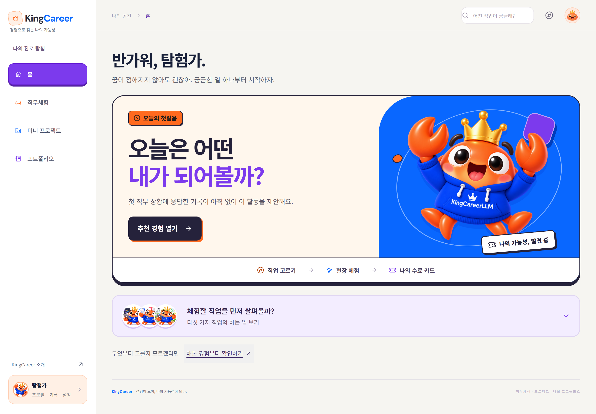
다음 경험과 진행 중인 활동을 확인하는 시작 화면
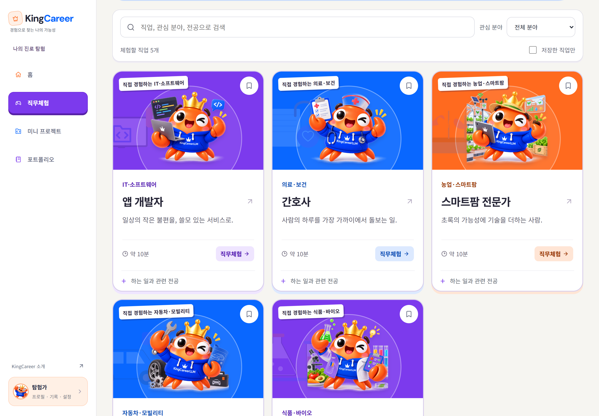
직업을 찾고 체험할 현장을 선택
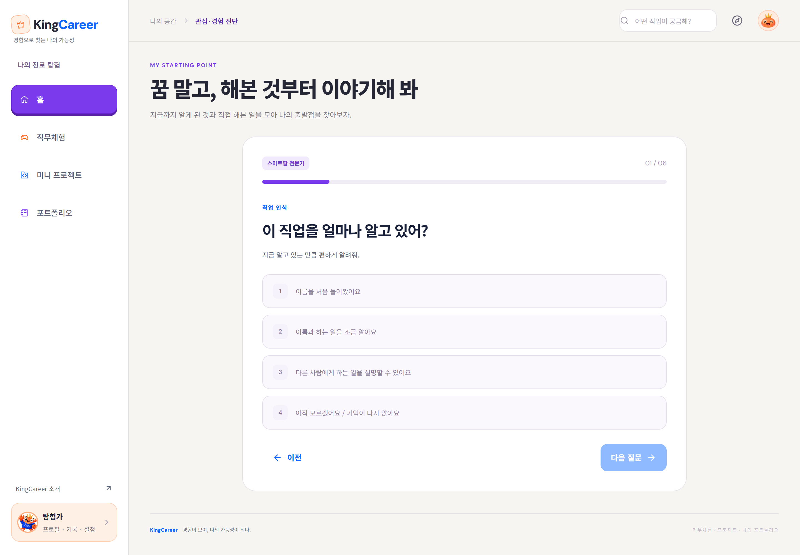
한 번에 한 질문씩 답하는 객관식 카드
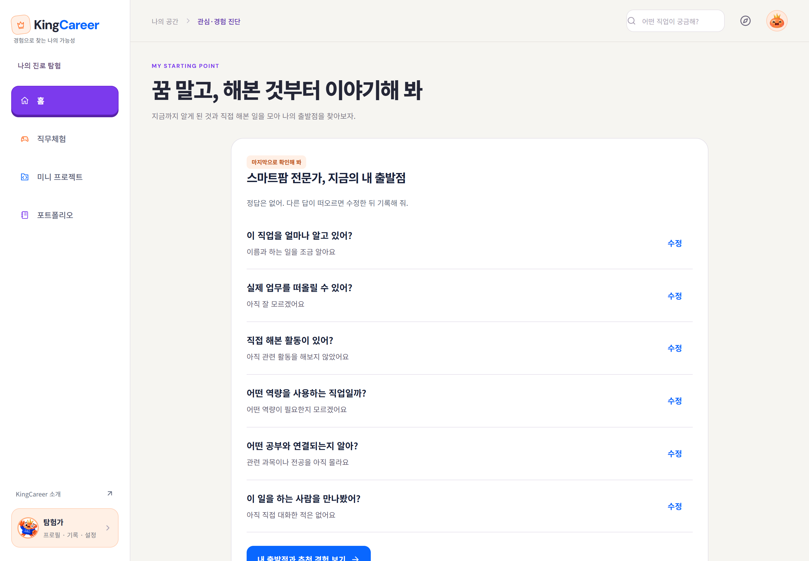
응답을 확인하고 수정한 뒤 저장
추천 이유와 출근 안내를 확인한 뒤, 넓은 현장에서 조사와 조치를 진행합니다.
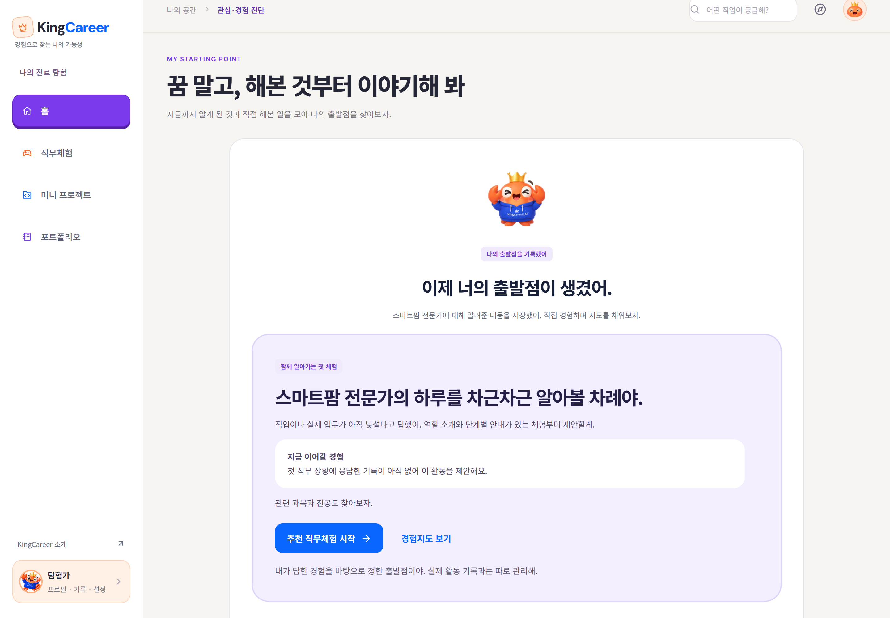
자기보고에 따른 출발점과 추천 이유
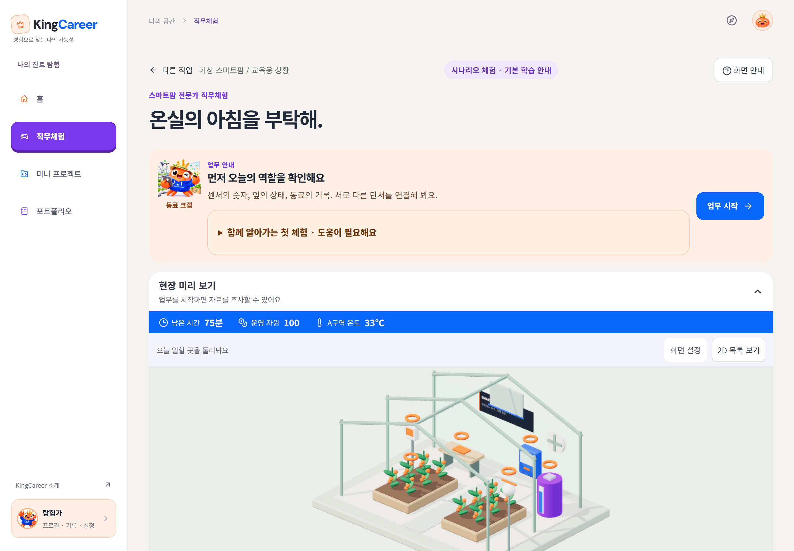
역할과 목표를 확인하고 현장으로 진입
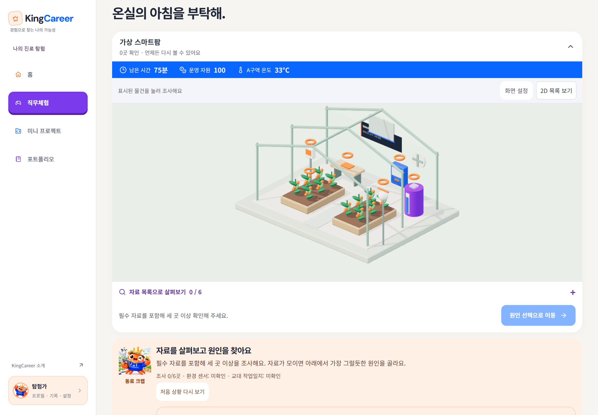
온실과 장비를 살펴보며 필요한 자료를 수집
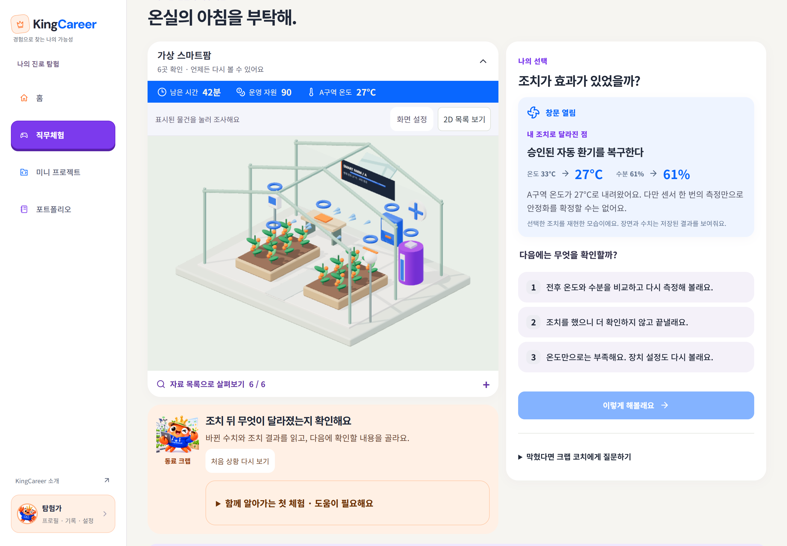
선택한 조치 이후 현장 변화와 후속 판단
수료 카드를 확인하고 선택적인 프로젝트 제작과 개인 기록으로 이어갑니다.
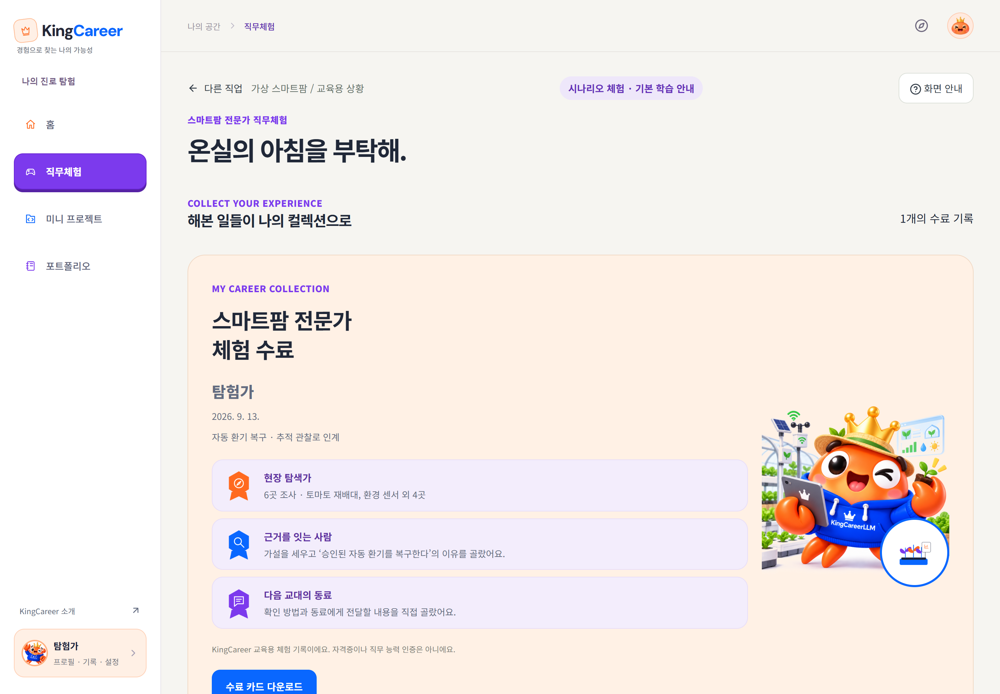
완료한 직무체험의 수료 카드와 다음 행동
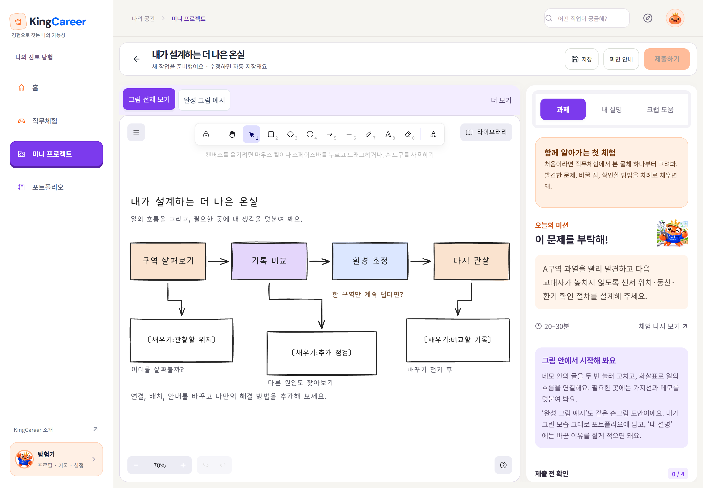
실제 그림 편집기로 설계도를 만드는 화면
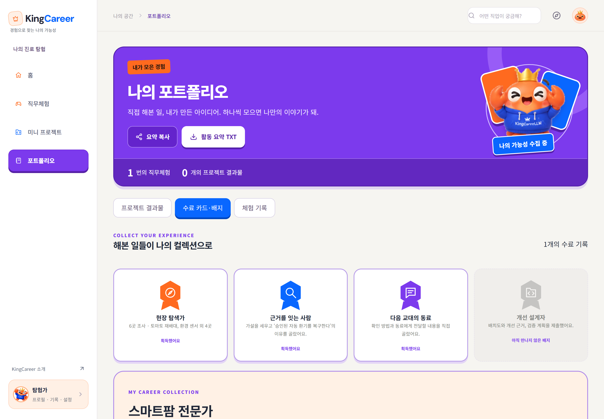
캡처용 계정의 체험 수료 기록 확인
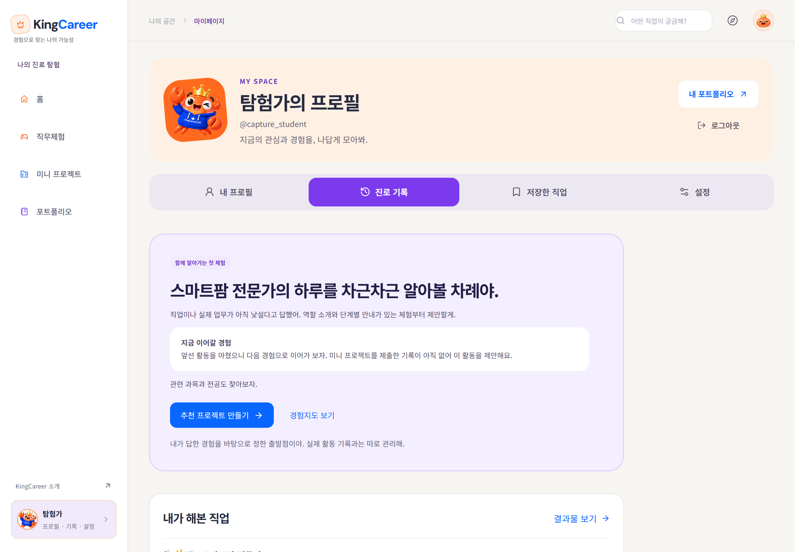
계정에 저장된 직업 경험과 완료 상태